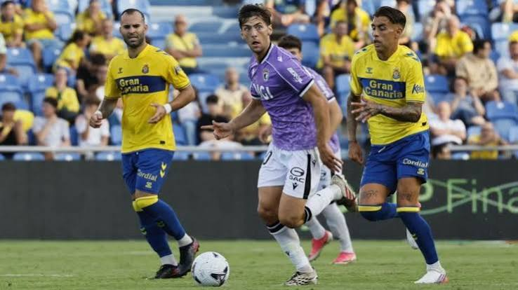

El Burgos CF asalta el campo de la UD Las Palmas por 1-2, con goles de Álex Forés y David González, en un partido donde se vieron las dos caras del equipo. La tímida y la valiente, con la que se supo gestionar una segunda parte excelente. Todo lo que no se hizo en la primera parte se realizó tras el descanso para ganar a lo grande, sobre la bocina a todo un trasatlántico de la Liga Hypermotion como es el conjunto canario.
Comenzaba el encuentro y todo indicaba que un Burgos impreciso iba a sufrir y mucho para conseguir algo positivo en su visita a las Islas Canarias.
Los de Sergio Francisco volvían a salir mal al terreno de juego, lo que se traducía en peligro constante. Los minutos pasaban y no se veía mejoría. Sin balón, sin ideas, sin garra ni acercamientos , el Burgos CF navegaba sin rumbo alguno.
En algún tramo, sobre el primer cuarto de hora, cuando pudo tener el balón, aunque fuera poco, los burgaleses lo intentaban pero sin éxito alguno debido a la timidez de las acciones.
La línea que estaba siguiendo era la misma de los últimos partidos. Un equipo blando en defensa, sin criterio con balón, incapaz siquiera de rondar el área rival con cierta claridad.
Por consecuencia y gracias a la insistencia mostrada por el conjunto pío pío, llegó el gol de Jesé Rodríguez en el minuto 37.
El tanto encajado hundía todavía más al Burgos, que acabaría el primer tiempo defendiendo en su área, dejando muchísimas dudas en todos los sentidos.
Se inicia la segunda parte con cambios en las filas de los castellanos, que pretendían dar un cambio radical de imagen como así fue. Saltaban al verde José Gragera y Álex Forés por Marcelo Expósito y Curro Sánchez.
En la reanudación, desde el primer balón, se veía a un Burgos totalmente distinto, que parecía haber despertado. Y es que el resultado obligaba al cuadro blanquinegro a llevar la iniciativa y arriesgar.
Con las cartas sobre la mesa y sin nada que perder, pasamos de ver la versión tímida, muy pobre a la valiente.
Ante esta reacción digna de un equipo grande, Las Palmas empezó a sentir la presión y poco a poco fue reculando hasta ceder por completo el testigo.
Los de Sergio Francisco por su parte, gozaban de confianza y se notaba. La verticalidad y buen juego daban su fruto con acciones como la de Karrikaburu, que con un pase en profundidad de muchísima calidad dejaba solo a Álex Forés para que este definiera con una picadita, marca de la casa, frente a Churripi (58’).
El gol del empate no era suficiente. Los burgaleses querían más. Mollejo y Forés tuvieron en sus botas el tanto que nos diera la victoria. Sin embargo, fue un David González desaparecido durante el encuentro quien dio los 3 puntos a los castellanos con una definición sublime al fondo de la red en la última jugada.
En definitiva, el Burgos ha demostrado que cuando quiere puede. Y con esto nos tenemos que quedar.